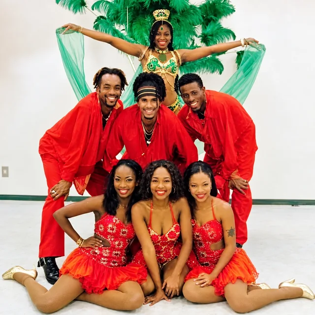
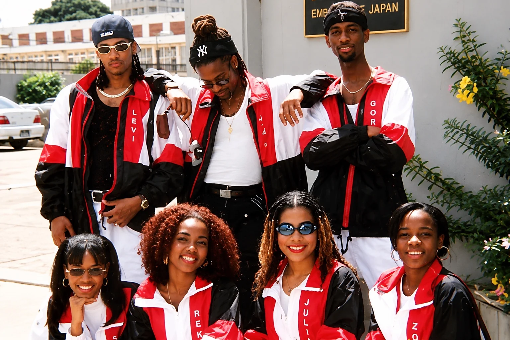
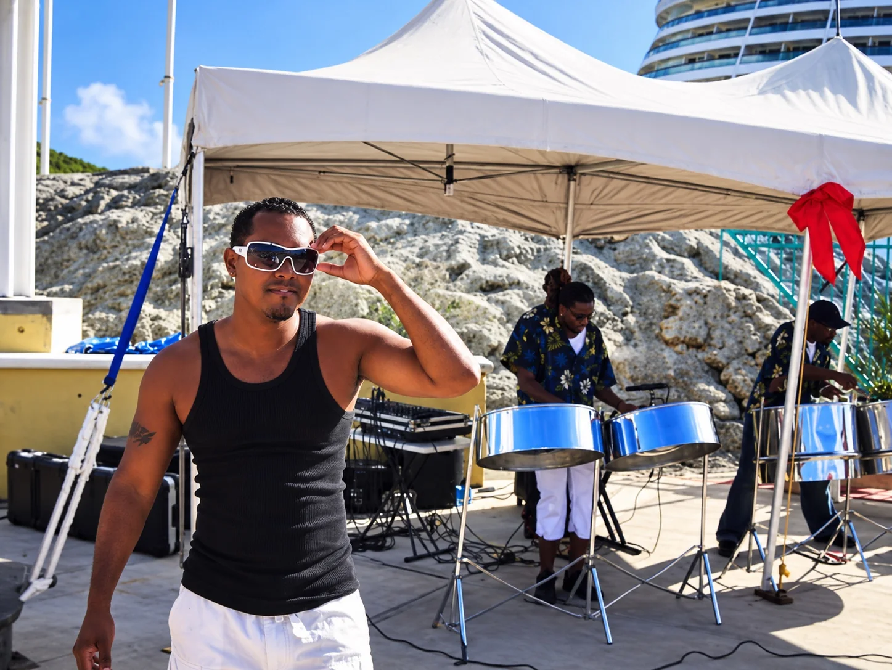

Official electronic press kit / artist & live entertainment
GORILLA
BOOMIN.
LEE VIARRUEL
Singer first. Musician always.
Live vocalist · Tenor steelpan · DJ · Producer
Trinidad & Tobago roots. Based in Romania.
The artist / biography
ONE ARTIST.
A LIFETIME OF MUSIC.
Lee Viarruel, professionally known as GORILLA BOOMIN (G//BMN:), is a Trinidad-born singer, tenor steelpan musician, multi-instrumentalist, DJ and producer. A performer since age 11, he brings the instincts of a working live entertainer into a contemporary, bass-driven musical vision.
His journey spans Trinidadian live bands, international performances, cruise-ship entertainment, steelpan, percussion and lead vocals. His career has taken him through Japan, Thailand and the United States, while his present creative base is Romania.
G//BMN: connects Caribbean rhythm and musicianship with modern club production. His signature performance vision combines DJ energy, expressive low-end, live vocals and the distinctive voice of the tenor steelpan.
For promoters: available to discuss artist performances, live vocal sets, DJ-led shows with optional steelpan, festivals, private events and selected collaborations. Show format and technical requirements are confirmed per booking.
Performance history
THE STAGE IS
HOME.
From Trinidad live-band stages to cruise entertainment and international performances, the foundation is real musicianship and a direct connection with audiences.



Official photo archive / press imagery
THE VOICE.
THE MUSICIAN.
A selection of authentic performance and historical photographs. Open any image to view its original website file.





Authentic performance footage
SEE IT.
HEAR IT.
BIG PEOPLE PARTY
Live performance archive
MMM CONCERT
Old-school soca medley — live performance
Promoters / agents / venues
BRING THE
BOOM.
For festivals, clubs, live entertainment, artist bookings, collaborations and music opportunities. Please include your event date, location, venue, expected audience and proposed show format.
CONTACT / BOOK THE ARTIST ↗MESSAGE ON INSTAGRAM ↗Booking details, fees and technical rider are supplied on enquiry. No unverified contact email is published here.